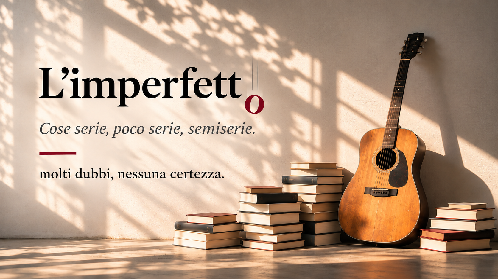

OUTING su un OUTFIT da OUTLET
(Ovvero: Pensavo fosse Amore, invece era un giubbotto) (Nota: i fatti e i personaggi narrati NON sono frutto di fantasia) PREMESSA Ho studiato Medicina a Siena. Perché sia andato a

(Ovvero: Pensavo fosse Amore, invece era un giubbotto) (Nota: i fatti e i personaggi narrati NON sono frutto di fantasia) PREMESSA Ho studiato Medicina a Siena. Perché sia andato a
Prevalenza e Incidenza sono due misure della frequenza di una malattia in una popolazione, ma descrivono aspetti diversi. In epidemiologia, la “prevalenza" si riferisce alla misura
Madonna, somigliate a questa luna, che bella e tonda in ciel si fa mirare; ma quella, almen, non porta veste alcuna, né cela ciò che invita a contemplare. Splende nel ciel, così al
Nessuno scritto in questa categoria, per ora.
Una persona con molti dubbi, nessuna certezza e qualche pensiero da mettere per iscritto.